What does this tool do for you?
Below is a simple demonstration for the tool. As you see, one can overlay a 3D cad model on the 2d image by simply clicking on the buttons as shown below.
The output image can be further used to train neural networks as well.
Applications
- Object Proposal Generation: In object proposal generation, one estimates the likely bounding boxes that are likely to be objects. The ObjectNet3D gives the bounding box coordinates in its output, making sure that one can use this tool for object proposal generation.
- 2D Object Detection: In object proposal generation, one estimates the places which are likely to be objects. However, since the output also contains what object does it exactly is, one can train the neural network based on these labels and further do 2D object detection.
- Continuous 3D Pose Estimation: The output of this tool contains the azimuth angle, the elevation angle and the inplane rotation of the CAD Model. This gives the 3D pose estimation of the object with respect to the CAD model.
Output File:


- Filename: This field simply gives the name of the file you annotated.
- Objects: The objects field is a list of multiple objects.
- class:This field determines the class of the object.
- bbox:This field gives the top left and the bottom right coordinates of the bounding box.
- Azimuth Coarse:This field gives the azimuth angle of the CAD Model.
- Elevation Coarse: This field gives the elevation of the CAD Model
- Distance: This is the distance from the observer to the center of the object.
- Theta: This is the inplane rotation of the CAD Model that os used to get the 3d pose of the object.
- Truncated: This field tells whether the object is truncated or not. It is 1 if the object is truncated else it is 0.
- Occluded: This field is set to 1 if the object is occluded.
- Difficult: This field is set to 1 if the object is difficult to annotate.
The original tool has been developed by from the following github repository : https://github.com/yuxng/ObjectNet3D_toolbox
Although the tool had amazing functionalities, certain necessary features were required to use this tool more conveniently.
For this, we have updated this tool and below is a list of all the features:
| Features | Original/Updated |
|---|---|
| 100 CAD Models | Original Feature |
| Annotate multiple objects in a single image | Original Feature |
| One can add new CAD models | Updated Feature |
| Creatation of annotation files of new images | Updated Feature |
| UI Controlled Bounding Box | Updated Feature |
| Support for quad meshes | Updated Feature |
| Images of all formats can be annotated | Updated Feature |
| Annotation files can be downloaded and saved as JSON output | Updated Feature |
| One can get images that only has CAD Models and everything else is black | Updated Feature |
| Push buttons for moving onto the next image | Updated Feature |
| Tool comes along with a read me document | Updated Feature |
Major Advantage: Simplicity of use
We have packaged the application and now we do not need Matlab to run the application. One can simply install the application and then run it as a desktop tool.
Below are the instructions on how to download and install the tool.
Downloading and installing
Download the tool from here
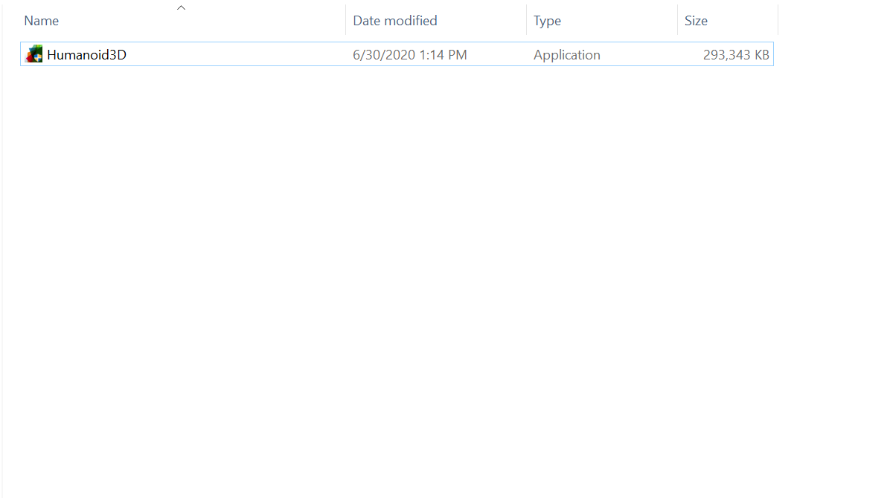
Click on the application and you will see the window as follows:
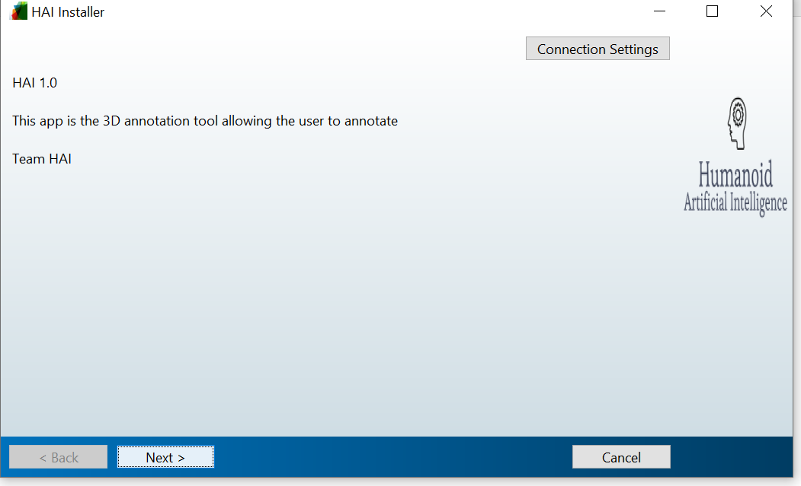
Add your installation path
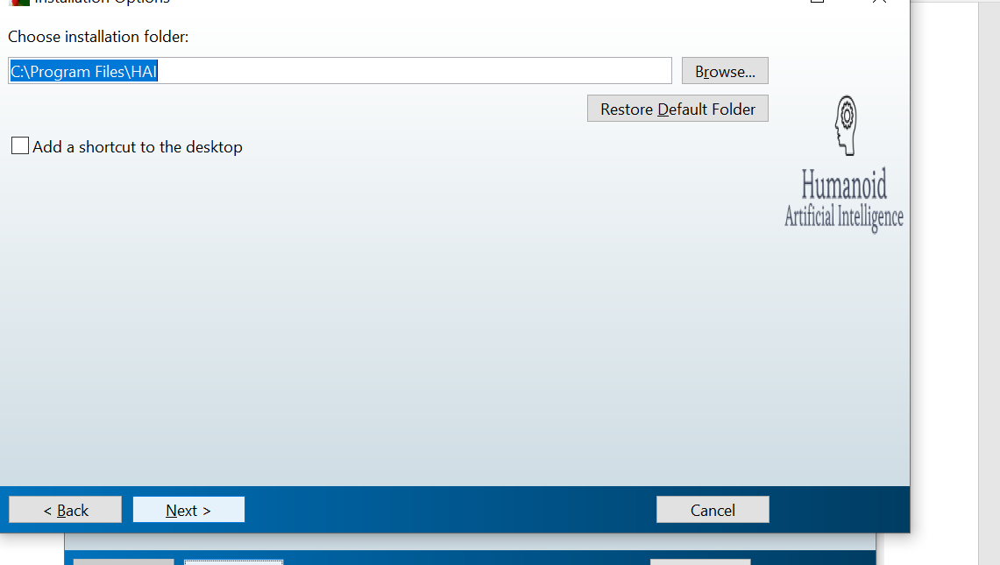
After Installation
Once installed, open the application and you would something as below:
- Download the root directory from here and copy paste it in any location in your computer
- The root directory will look like this: 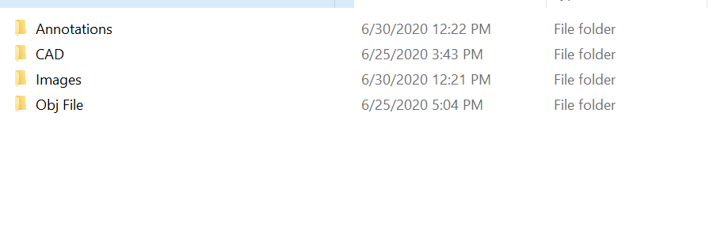

New Images
- Add images and do the corresponding annotation for that. To do that click on add images and get annotation.
- You will be asked to add image directory
- Go ahead and add your image directory 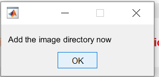
- Once done, add annotation directory where you wish to store the annotations. Add the number of objects for each of the images. 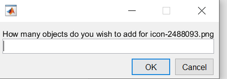
- For every object, enter the class of the object 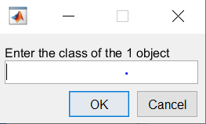
New CAD models
- Click on add new Cad Models 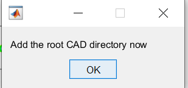
- Add Root Obj Files 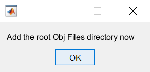
- Enter the folder where you want to store the new CAD file 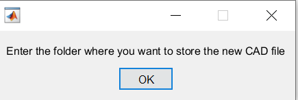
Start Annotating
- Click on call annotate pose.m and add annotation, the image and the cad directory from the root
Store Output
- Click on Store Image annotations to store the output
- A dialog box will ask for the root directory 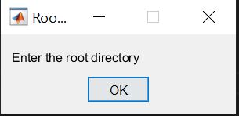
- Go ahead and add your directory
- A dialog box will ask for the output directory 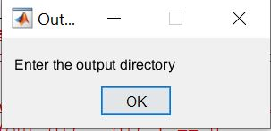
- Go ahead and add your output directory
- Once the output directory has been added, go ahead and store your outputs
- You can view the outputs in the output directory